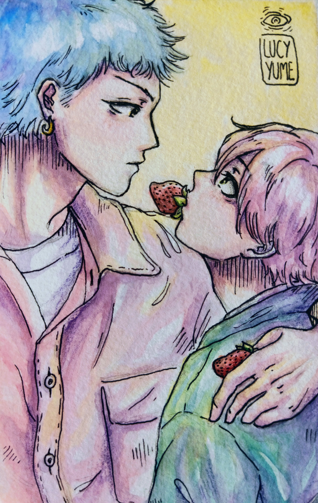

O mangaká de histórias shoujo, Go Okazaki, e o mangakás de tirinhas, Yusuke Akune, finalmente começam a namorar e passam os dias no maior amasso. No entanto, Go tem uma certa preocupação com relação ao sexo... Enquanto isso, eles descobrem sobre o novo amor de Hibiki, aquele com quem Akune tinha uma amizade colorida, e acabam se envolvendo de uma forma que resulta em algo inesperado. O volume inclui também um capítulo extra!!
★ Redesenhei a ilustração da contra capa no meu estilo
